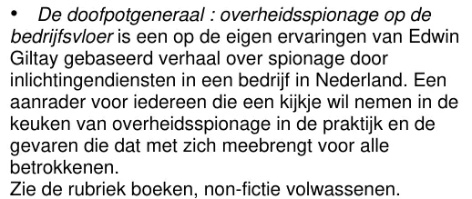

Prueba · Reseña
Reseña de NBD Biblion sobre la primera edición, 10 de abril de 2015
El pasaje
«De doofpotgeneraal : overheidsspionage op de bedrijfsvloer es un relato basado en las propias experiencias de Edwin Giltay sobre el espionaje de los servicios de inteligencia en una empresa de los Países Bajos. Recomendable para todo aquel que quiera echar un vistazo entre bastidores al espionaje gubernamental en la práctica y a los peligros que entraña para todos los implicados. Véase la sección libros, no ficción adultos». Página 2, la nota sobre el libro en el boletín de adquisiciones de NBD Biblion, compuesta por la primera y la última frase de la reseña de la página 1. Traducido del neerlandés; el texto original figura a continuación. De doofpotgeneraal es el título original neerlandés del libro El general del encubrimiento.
Texto original
“De doofpotgeneraal : overheidsspionage op de bedrijfsvloer is een op de eigen ervaringen van Edwin Giltay gebaseerd verhaal over spionage door inlichtingendiensten in een bedrijf in Nederland. Een aanrader voor iedereen die een kijkje wil nemen in de keuken van overheidsspionage in de praktijk en de gevaren die dat met zich meebrengt voor alle betrokkenen. Zie de rubriek boeken, non-fictie volwassenen.” Las líneas de la nota se han unido aquí.

Por qué importa este documento
En esta reseña, NBD Biblion, el servicio de reseñas de las bibliotecas neerlandesas, lee De doofpotgeneraal como un relato detallado del espionaje de los servicios de inteligencia dentro de una empresa neerlandesa. El reseñista escribe que el libro se lee como una novela de espionaje y lo recomienda a todo aquel que quiera echar un vistazo entre bastidores al espionaje gubernamental. El ensayo cuenta esta reseña entre las críticas elogiosas que el libro recibió en 2015.
En el boletín de adquisiciones para las bibliotecas, NBD Biblion catalogó el libro como no ficción, en la sección «boeken, non-fictie volwassenen» (libros, no ficción adultos). Después, 48 bibliotecas lo compraron a través de ese servicio. Giltay se enteró de esa cifra por teléfono, a través de Biblion, y el 11 de mayo de 2015 se la transmitió por correo electrónico a su editorial. El libro (edición inglesa, p. 137) recoge que bibliotecas públicas de todo el país lo incorporaron a sus colecciones.
Procedencia
- Documento
- Reseña de libro, captura de pantalla de la página de la reseña (página 1), con el boletín de adquisiciones de NBD Biblion en el que se anuncia el libro (página 2)
- Publicación
- NBD Biblion, el servicio de reseñas de las bibliotecas neerlandesas
- Autor
- No se indica el nombre del reseñista
- Obra reseñada
- Edwin Giltay, De doofpotgeneraal, SpeakEasy Publisher & Agency, 2014, 198 páginas, ISBN 978-94-921460-0-7
- Fecha
- 10 de abril de 2015, la fecha del encabezado del boletín de adquisiciones de la página 2
- Página 2
- NBD Biblion, Aanschafinformaties (boletín de adquisiciones) semana 17, 2015, sección Mediaberichten, encabezado «(10-4-2015) website - Mediaberichten17-2015.doc». En el apartado «Bij dit nummer» (en este número), NBD Biblion anuncia el libro con la primera y la última frase de la reseña. Los demás títulos de esa página están tachados
- Idioma
- Neerlandés
- Fuente
- Captura de pantalla y boletín de adquisiciones en dedoofpotgeneraal.
nl/ doc/ biblion2015.pdf
Citado en:
- el ensayo «La prohibición cayó, el libro quedó en pie» en el capítulo (5) «Más que un libro prohibido»
- la sección de voces bajo el epígrafe «Elogios de la crítica».
Documento: https://
Modificado por última vez el 25 de noviembre de 2026, consultado el 27 de noviembre de 2026.

Esta página es una ficha de prueba del libro El general del encubrimiento de Edwin Giltay y del sitio web que lo acompaña.